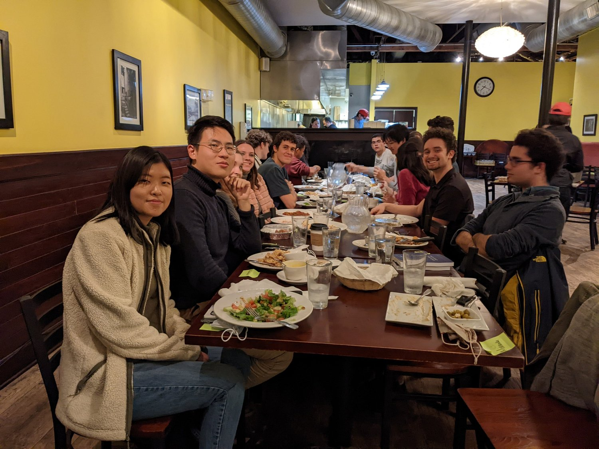

Introductory Fellowship
Learn how to do good, better.
Are you interested in having a large social impact? Do you believe we should be more thoughtful about how we allocate the world’s resources to do good? Want to meet a community of UChicago students dedicated to making the world a better place through their careers and lives?
Sign up for UChicago EA’s Introductory Fellowship! Our six-week program explores the core ideas and concepts within the Effective Altruism movement. Fellows will gain a framework for figuring out how you can make a difference in the world. Our next round of the intro fellowship will run Fall of 2025.
You can view the syllabus here. Applications have closed for this cycle, but you can sign up to be notified when we next open applications here.
What the Fellowship Involves
Weekly one-hour discussion with your cohort
Cohorts consist of three to five fellows and one facilitator
An hour or two of materials (readings, videos, etc.) to go through each week
Exclusive programming opportunities, including eligibility for the Midwest EA Next Steps Retreat and other activities
Join a local and global community of people committed to finding and enacting effective approaches to impact!